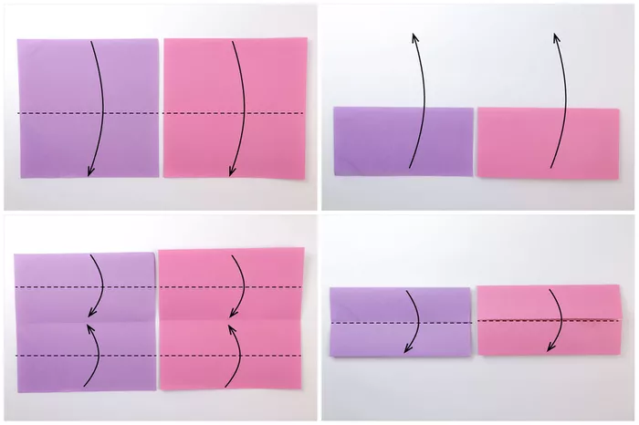
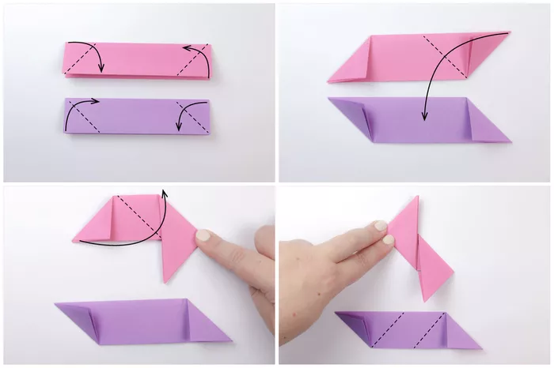
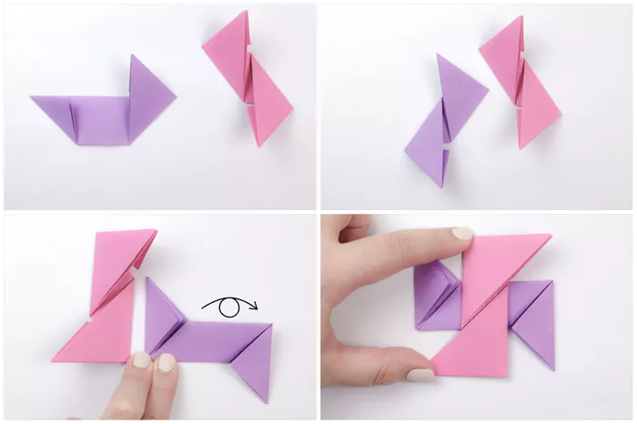
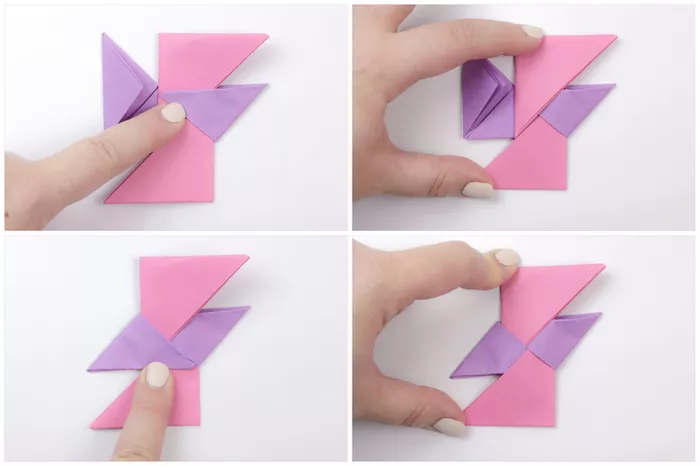
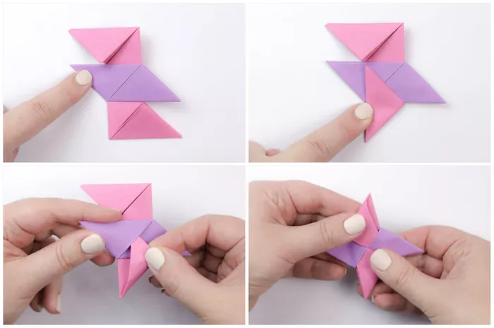

1) Start with both sheets of paper side-by-side, and fold the paper in half, top to bottom.
2) Unfold the paper.
3) Fold the top and bottom edges to the central crease.
4) Fold the top edge down to the bottom edge.
5) For the pink paper, fold the top left corner in and down. Fold the bottom right corner in and up.
6) For the purple paper, fold the bottom left corner in and up. Fold the top right corner in and down.
7) Fold the top right corner down on the pink paper.
8) Fold the bottom left corner up on the pink paper.
9) The pink one is complete, and you can see the creases that the purple one will have.
10) The bottom right corner is folded up.
11) The top left corner is folded down.
12) Flip the purple one over to the other side and rotate as shown.
13) Place the pink one on top of the purple one.
14) Fold the triangle on the right side up diagonally to the left.
15) Slot the flap underneath the top pink triangle.
16) Repeat on the left flap.
17) Flip the model over to the other side.
18) On the other side, repeat the same process on this side.
Shuriken
Source: https://www.thesprucecrafts.com/origami-ninja-star-tutorial-4034142




